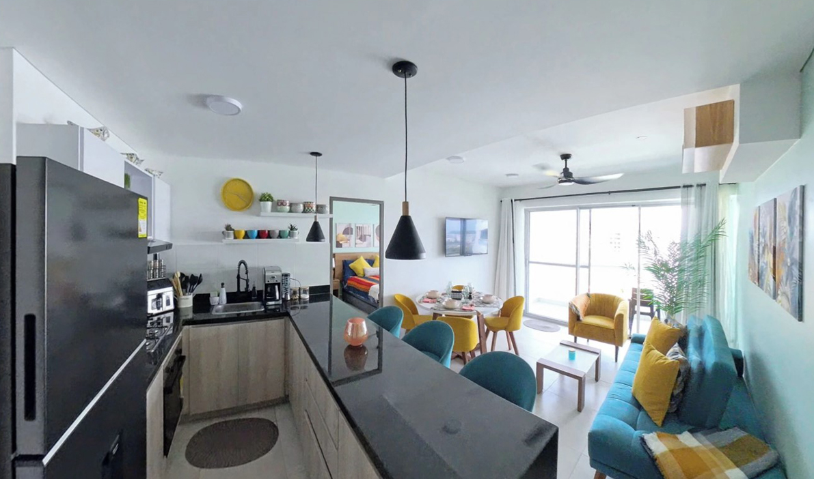
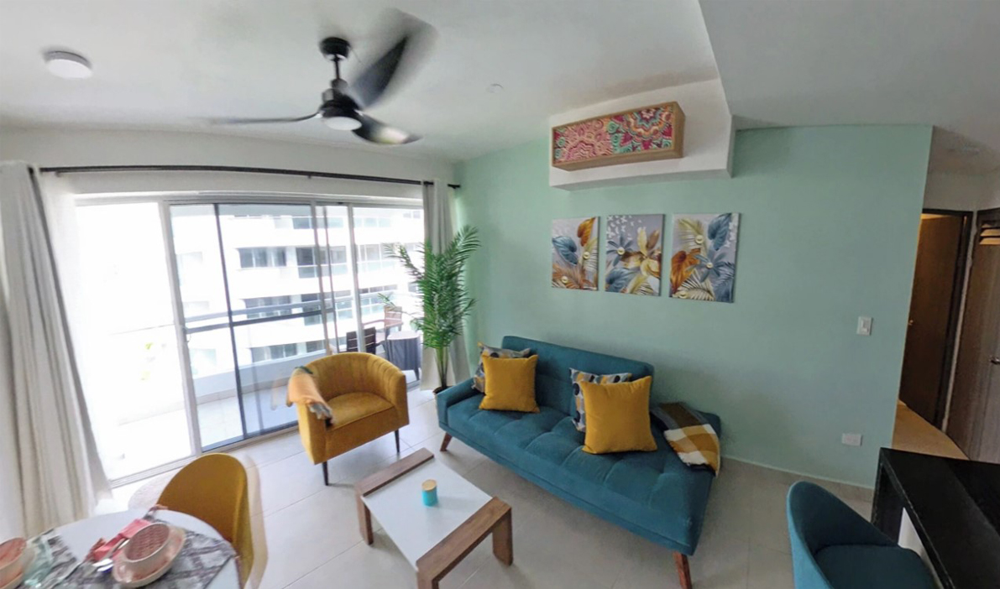
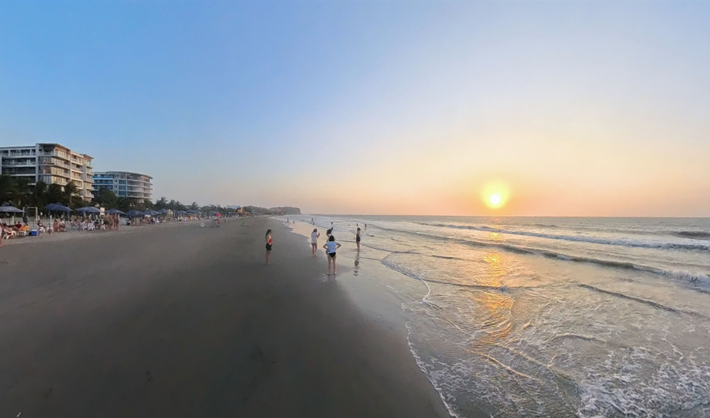
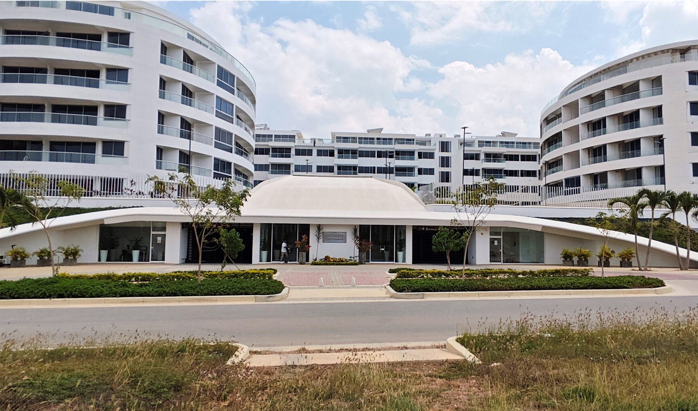

Profitez d'un élégant appartement situé au quatrième étage, avec ascenseur, dans le complexe résidentiel exclusif Castelo-Serena del Mar.

Ce spacieux et moderne appartement allie confort et style. La chambre principale dispose d'un lit double (de type lit gigogne), d'une salle de bain privée avec douche et d'un grand dressing de type Walk-in.

L'appartement comprend également 2 salles de bain complètes, chacune avec douche à eau chaude pour votre confort.

La deuxième chambre est équipée de deux lits, dont un lit gigogne, et d'un grand garde-robe.
La cuisine est entièrement équipée avec des appareils tels que cafetière, micro-ondes, grille-pain et bien plus, idéale pour préparer vos repas.
Dans le salon confortable, vous trouverez un grand canapé-lit et un accès au balcon privé, parfait pour vous détendre et profiter de l'ambiance.

La salle à manger moderne dispose de quatre places, accompagnées de trois chaises de bar pour plus de confort..

Le complexe résidentiel offre d'excellentes commodités, y compris des piscines pour adultes et enfants, un terrain de volley-ball, une surveillance 24h/24 et bien plus.
De plus, il possède une plage privatisée à seulement 15 minutes, avec la possibilité de réserver facilement via une application.
À quelques pas de l'appartement, vous trouverez des restaurants, des magasins, des pharmacies et une vie nocturne animée, ce qui vous permettra de plonger dans le charme et l'énergie unique de Carthagène.